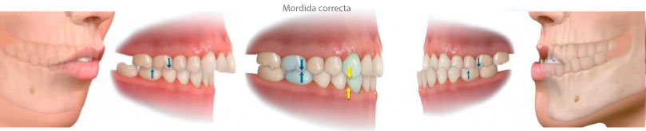

La ortodoncia es una especialidad de la odontología que se encarga de todo el estudio, prevención, diagnóstico y tratamiento de las anomalías de forma, posición, relación y función de los dientes y huesos.
Su ejercicio es el arte de prevenir, diagnosticar y corregir sus posibles alteraciones y mantenerlas dentro de un estado óptimo de salud y armonía mediante el uso y control de diferentes tipos de fuerzas.
El afán por corregir los dientes apretados, irregulares o salientes es muy antiguo pues hay constancia de que ya en el siglo VIII a.C. se intentaba solucionar tales anomalías. Entre los hallazgos culturales del mundo griego figuran aparatos ortodónticos.
Antes de la colocación de los brackets. Se tiene que realizar un estudio del paciente.
Para ello se realizan radiografías panorámicas y radiografías laterales de cráneo, para obtener medidas de la posición de los dientes respecto al hueso, de los huesos entre si y mucha información diagnóstica. También se toman modelos de estudio y fotografías extraorales e intraorales.
Con todo esto y la historia clínica del paciente se hace un estudio detallado de ortodoncia.
Los pasos para la colocación de los brackets son:
El cuidado va más allá de una correcta limpieza de la boca, ya que hay que evitar introducir en la boca cualquier tipo de objeto o alimento que facilite que se despegue el aparato, que se puedan deformar los alambres.
Esto incluye evitar determinados tipos de alimentos y cambiar la manera de comer otros:
Por otra parte, en el caso de los aparatos fijos la higiene bucal ha de ser muy cuidadosa, ya que sus características facilitan la retención de placa dental y de restos de alimentos entre los dientes:
La Ortopedia Dental es una de las especialidades de la Odontología que se encarga mediante el uso de aparatos fijos o removibles en aplicar estímulos que alteran o modifican un patrón esqueletal, asi evitar en lo posible futuros problemas esqueletales.

La Ortopedia obtiene mejores resultados cuando se aplican en pacientes que tienen un crecimiento activo, ya que se ataca problemas asociados con deficiencias o excesos esqueletales.
La ortopedia nos ayuda a quitar hábitos: chuparse el dedo, chuparse el labio, chuparse la lengua. La mejor edad para colocar la ortopedia dental es de 4 años y 12 años, es recomendable asistir a la limpieza dental cumplido los 2 años.
Beneficios de una valoración temprana son: